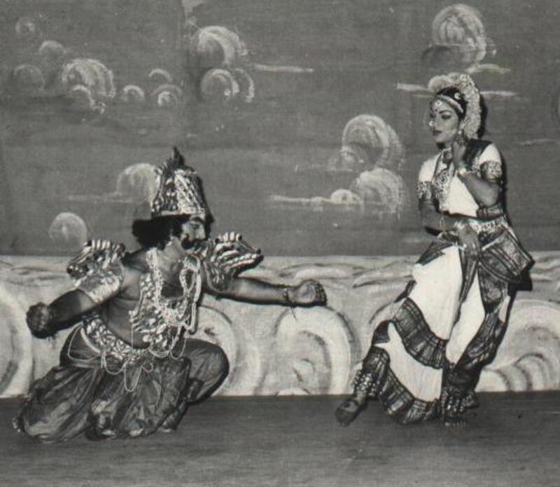
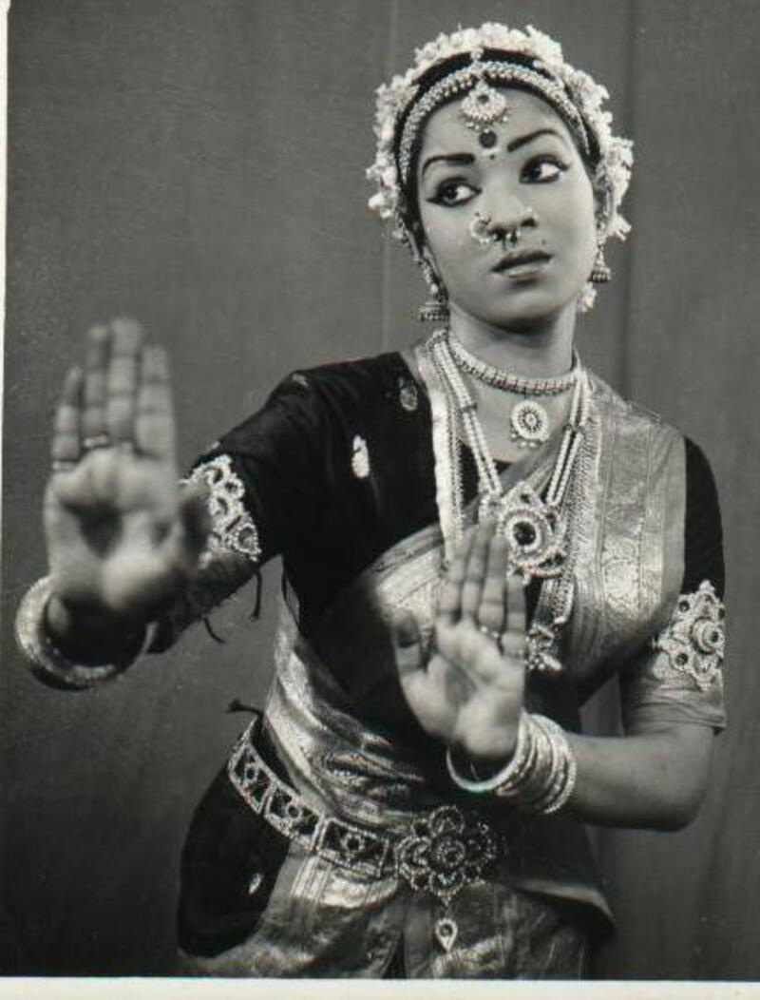

Hema started her first dance lessons at the young age of six. Her first Guru, Sri Bhagavthula Yagna
Narayana Sarmagaru, was raised in the village of Kuchipudi. Her father, Y.V. Hanumatharao, is a
renowned lawyer in Vijayawada who grew up in the village of Yaddanapudi, that neighbors
Kuchipudi.
Throughout her childhood, Hema would often hear stories about the Kuchipudi art from her father. He
would explain in great detail about the Bhagavatha Mela Natakams that he witnessed during his
childhood when various festivals such as Sankranthi, Srirama Navami, and Dasara would occur. Hearing
these fascinating stories early in her life is what led Hema to pursue Kuchipudi soon afterwards.
As a child, Hema had the opportunity to meet legendary gurus such as Vedantam Satyanarayana Sarma
Garu and Korada Narasimha Rao, since they would often visit her home and spend time with her
father.
Hema's mother, Lakshmi, is also an ardent lover of music and dance and consistently encouraged her
to learn Veena, the Indian stringed instrument. She is also well-versed in Telugu literature, which
helped Hema understand the value and divinity in the Kuchipudi art form in great depth.
From Hobby to Craft

As Hema grew older, she learned the fundamentals of Kuchipudi from the aforementioned Guru Sri
Bhagavthula Yagna Narayana Sarmagaru and his son, Venkata Rama Sarmagaru. When it was time to move
on to higher education, Hema continued her study of classical dance by earning diplomas in Kuchipudi
and Bharathanatyam from {University Name Here}. She also attended Central University of Hyderabad
for the Master's of Performing Arts program for Kuchipudi.
In addition to these degrees in the classical arts, Hema also graduated from Nagarjuna University
with a Bachelor's of Law degree. She was also selected to serve as a judge in India in 1998, but
turned down the position and instead immigrated to America to start a new life in the Chicagoland
area.
A few years after settling in Illinois, Hema quickly discovered interest and
opportunity to share her
deep knowledge of Kuchipudi and Indian classical arts with the growing South Asian community in the
area. She founded Lasyam School of Kuchipudi Dance in 2000 and has since trained many students and
choreographed numerous Kuchipudi dance ballets, recitals, dramas and Rangapravesams (solo graduation
dance performances).

Sharing Kuchipudi Across Generations
Over the past 21 years, Lasyam School of Kuchipudi Dance has established itself as a leader in
classical Indian dance instruction and has provided its students with countless accomplishments. A
few examples include performances at TANA and ATA Telugu assocations' national conferences, original
dance ballets such as Seetharama Kalyanam, **\_**, and solo rangapravesams in India and America.
Lasyam students even had the chance to travel to Cupertino, CA and make history in the Guinness Book
of Work Records (2008) for the performing with largest classical dance performance group.